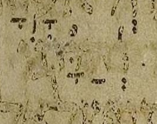
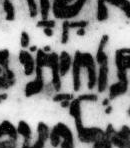

{kind=link}

| וְ֝חַיָּתוֹ וְ֝חַיָּת֗וֹ |
33:28 | רביע of רביע מוגרש is absent in μL, says BHQ’s implication |
Note that above we only show (and are only concerned with) the קרי form.
In μA, the letters are so faint as to be almost illegible, but as is often the case in μA, the pointing is quite clear, perhaps because it was done in an ink that aged better. Fortunately it is the pointing, not the letters, that are at issue here, and in any case, the pointing allows us to “back-decipher” the letters and see that the רביע dot in question is indeed present on top of the (faint) ת.
In all three manuscripts, an orphan חולם dot appears between the ת and the yod of the כתיב letters. It belongs, conceptually, to the vav of the קרי.
In μY, another dot appears above the yod, very large compared to the other dots, and oval rather than round. I am not sure how to interpret it.
U — M — μL (page 406B, col 1, line 24):
μA (Aleppo) (page 278v, col 2, line 21, word 5):

μY (Cambridge 1753) (page 82A, col 2, line 13, word 5):
